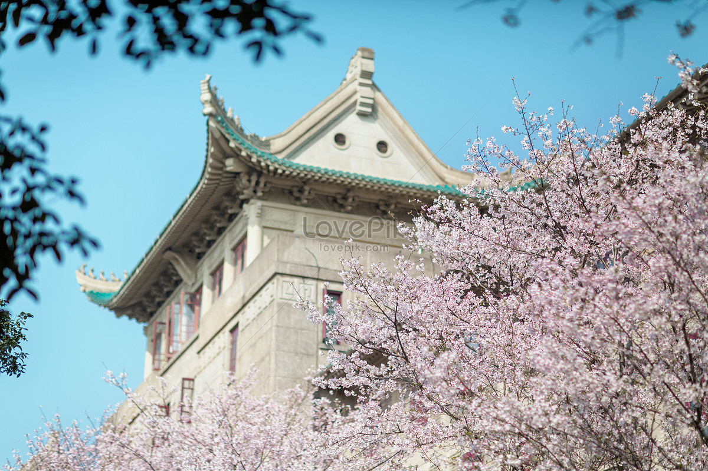

江岸线夜景焕新与滨水公共空间提升
从长江主轴到汉口江滩，城市夜间公共活动半径持续扩大。
LOADED
(WH®)
城市发展时间轴 / 城市更新 / 文化现场
从长江主轴到汉口江滩，城市夜间公共活动半径持续扩大。
以历史地标为核心，连通首义片区与城市叙事步行轴。
把湖岸步道、骑行绿道和科技园区生活圈连接成一体。
SURF / 武汉流动界面
事件、音乐、夜色与青年创作的交汇面



INDEX / 城市索引
以信息密度呈现城市活力与传播内容
36
全年城市更新与文旅深度报道
24
江城声音、在地人物与高校创新
18
滨江更新、湖区治理、街区复兴样本
12
武汉夜跑与通勤氛围曲目
ABOUT / 武汉城市宣传项目
复刻对象：tlb.betteroff.studio 的门禁交互、路由组织、黑白高对比视觉与索引系统。
保留原站的结构和动效语言，用武汉城市与高校素材替换媒体内容。
包含 Enter with sound、路由切换淡入淡出、滚动 reveal、卡片 hover 倾斜与点击反馈。
通过 pre-delivery smoke test 生成截图并用于 README 样例更新。